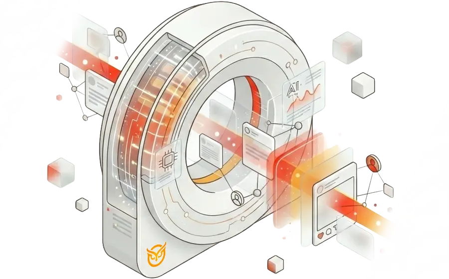
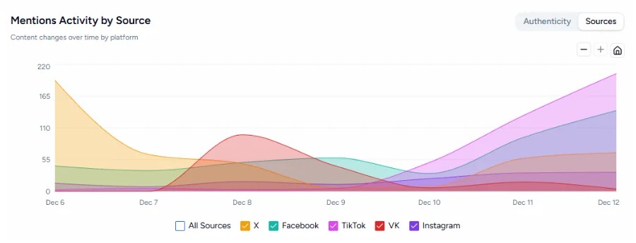

Cyabra, Inc. · Nasdaq: CYAB
AI-powered narrative intelligence
Cyabra’s platform analyzes actors, behaviors and content across digital platforms to reveal coordinated manipulation and inauthentic activity, map emerging narratives and enable evidence-based responses for governments and enterprises. Release, Jul 1, 2026
Who is driving a narrative, how it spreads, and whether it is authentic
Narrative intelligence builds on the social listening tools organizations already use, adding an understanding of authenticity, influence and coordinated behavior, as Cyabra’s CEO describes it. Cyabra’s platform serves public-sector, national security, enterprise, communications and risk teams. Release, Jul 1, 2026
- 1AuthenticityDistinguishes authentic activity from inauthentic actors, bot networks and AI-generated content.
- 2CoordinationReveals coordinated influence activity. Coordinated Activity Detection, launched Jul 28, 2026, is an AI agent that applies Cyabra’s analyst methodology and returns an evidence-backed verdict on every scan. Release, Jul 28
- 3ImpactIdentifies the sources driving a narrative and how it is amplified and spreads.
- 4Narrative intelligenceMaps emerging narratives so teams can identify the signals they can actually trust.
- 5Evidence-led mitigationTurns the evidence into a decision, which the company describes as whether to ignore, monitor or mitigate. Investor presentation, Aug 2026
Capabilities as the company describes them. Release, Jul 1, 2026 cyabra.com

How the platform is delivered
- Platform subscription
- Customers subscribe to the platform, typically for several months to three years and usually paying in advance. The company says subscription revenue accounts for a majority of its total revenues. S-1 Oct 8, Risk Factors 10-Q Jun 30, MD&A
- On-premises licence
- Where a customer, particularly a government agency, hosts the platform on its own servers, a two- to three-year licence. 10-Q Jun 30, MD&A
- API and partners
- Delivered as SaaS and by API, sold directly and through partners and resellers. Since the second quarter those routes include Carahsoft Technology Corp. for U.S. government agencies and Onclusive, Inc. Investor presentation, Aug 2026 Release, Aug 13

Record second-quarter revenue, up 39% on a high-margin platform
Revenue was $1.9M in the second quarter of 2026 against $1.3M in the second quarter of 2025. The company attributes the growth to new customer wins and higher revenue from existing customers; growth was 12% in the first quarter of 2026. 10-Q Jun 30, MD&A Release, Aug 13
Second quarter, year over year
Revenue for the three months to Jun 30, USD thousands as filed, drawn to scale. 10-Q Jun 30, statements
Annual revenue, 2023 to 2025
The company presents this as a compound annual growth rate of about 72%. 2024 and 2025 are audited and filed; 2023 is as presented in the company’s investor presentation. 8-K Mar 31, Item 9.01(a) Investor presentation, Aug 2026
Gross margin progression
2023 to 2025 as presented in the company’s August 2026 investor presentation (2024 and 2025 match gross profit over revenue in the audited statements). H1 2026 is calculated here from the 10-Q: $2,772K gross profit on $3,268K revenue. Q2 2026 is “approximately 84%” as stated by the company. Investor presentation, Aug 2026 10-Q Jun 30, statements Release, Aug 13
$8.1M
Annualized recurring revenue at Jun 30, 2026, up 29% year over year. ARR is a measure the company defines; it is not GAAP and not a forecast. 10-Q Jun 30, MD&A
$4.9M
Contracted revenue not yet recognized at Jun 30, 2026, $4.2M of it expected within a year. 10-Q Jun 30, Note 7
$6.0M
Private placement announced Jul 9, 2026, with new and existing institutional investors, management and board members (about $5.3M net). Release, Jul 9 10-Q Jun 30, Note 9
Financial statements, as filed
Cyabra, Inc. is the former Trailblazer Holdings; its statements are those of Legacy Cyabra, the accounting acquirer. 2025 and 2024 are audited and come from the 8-K of Mar 31, 2026; 2026 comes from the two 10-Qs. 8-K Mar 31, Item 9.01(a) 10-Q, May 15, 2026 10-Q, Aug 13, 2026
Statements of operations, USD thousands as filed
| FY2025year to Dec 31, 2025, audited | FY2024year to Dec 31, 2024, audited | H1 2026six months to Jun 30, unaudited | H1 2025six months to Jun 30, unaudited | |
|---|---|---|---|---|
| Revenue | 5,707 | 4,155 | 3,268 | 2,591 |
| Cost of revenues | 866 | 782 | 496 | 409 |
| Gross profit | 4,841 | 3,373 | 2,772 | 2,182 |
| Research and development | 6,894 | 4,653 | 7,568 | 3,691 |
| Sales and marketing | 5,696 | 3,316 | 2,559 | 3,192 |
| General and administrative | 4,221 | 4,602 | 7,589 | 2,756 |
| Operating loss | (11,970) | (9,198) | (14,944) | (7,457) |
| Financing income (expenses), net | (828) | (6,398) | 799 | 1,716 |
| Income taxes | (21) | (14) | (64) | (19) |
| Net loss | (12,819) | (15,610) | (14,209) | (5,760) |
Basic net loss per share was $1.68 for the first half of 2026 on 8,458,222 weighted-average shares, and $2.53 for the first half of 2025 on 2,396,328. 10-Q Jun 30, Note 5
By quarter, USD thousands as filed
| Q1 2026three months to Mar 31 | Q1 2025three months to Mar 31 | Q2 2026three months to Jun 30 | Q2 2025three months to Jun 30 | |
|---|---|---|---|---|
| Revenue | 1,415 | 1,260 | 1,853 | 1,331 |
| Cost of revenues | 192 | 196 | 304 | 213 |
| Gross profit | 1,223 | 1,064 | 1,549 | 1,118 |
| Research and development | 5,508 | 1,851 | 2,060 | 1,840 |
| Sales and marketing | 1,255 | 1,736 | 1,304 | 1,456 |
| General and administrative | 6,284 | 1,515 | 1,305 | 1,241 |
| Operating loss | (11,824) | (4,038) | (3,120) | (3,419) |
| Financing income (expenses), net | 1,054 | 724 | (255) | 992 |
| Income taxes | 0 | 0 | (64) | (19) |
| Net loss | (10,770) | (3,314) | (3,439) | (2,446) |
| Net loss per share, basic ($) | (3.10) | (1.47) | (0.26) | (1.07) |
Weighted-average shares, basic: 3,471,031 for Q1 2026 and 2,356,837 for Q1 2025; 13,390,609 for Q2 2026 and 2,435,385 for Q2 2025. 10-Q Mar 31, Note 5 10-Q Jun 30, Note 5
Balance sheet, selected lines, USD thousands as filed
| Jun 30, 2026unaudited | Dec 31, 2025audited | |
|---|---|---|
| Cash and cash equivalents | 794 | 294 |
| Accounts receivable | 568 | 269 |
| Total current assets | 1,979 | 737 |
| Total assets | 2,632 | 1,458 |
| Trade payables | 2,015 | 1,775 |
| Short-term loans | 2,003 | 5,768 |
| Convertible notes | 0 | 12,869 |
| Deferred revenues, current | 3,452 | 2,816 |
| Employees and related | 2,937 | 1,298 |
| Total current liabilities | 13,850 | 25,476 |
| Deferred revenues, long-term | 683 | 115 |
| Total liabilities | 14,628 | 26,229 |
| Redeemable convertible preferred stock | 0 | 15,268 |
| Accumulated deficit | (61,582) | (47,373) |
| Capital deficiency | (11,996) | (40,039) |
Remaining performance obligations, contracted revenue not yet recognized, were $4.9M at Jun 30, 2026: $4.2M expected within a year and $0.7M beyond. 10-Q Jun 30, Note 7
Cash flow, six months, USD thousands as filed
| H1 2026six months to Jun 30, unaudited | H1 2025six months to Jun 30, unaudited | |
|---|---|---|
| Net cash used in operating activities | (4,995) | (3,833) |
| Net cash used in investing activities | (28) | (29) |
| Net cash provided by financing activities | 5,564 | 3,131 |
| Net change in cash | 541 | (731) |
The cash-flow statement carries the March PIPE as one $8.0M line; the 8-K of Mar 31 describes it as $5.5M in cash plus the extinguishment of the 2025 bridge notes ($2.5M principal) and their accrued interest. In the same six months loans received were $2.7M, loans repaid $6.4M, and cash received from the merger $1.3M. 10-Q Jun 30, cash flow 8-K Mar 31, Introductory Note
Adjusted EBITDA, as the company defines it, USD thousands
| H1 2026six months | H1 2025six months | Q2 2026three months | Q2 2025three months | |
|---|---|---|---|---|
| Net loss | (14,209) | (5,760) | (3,439) | (2,446) |
| Depreciation and amortization | 29 | 29 | 15 | 15 |
| Income taxes | 64 | 19 | 64 | 19 |
| Finance income, net | (799) | (1,716) | 255 | (992) |
| EBITDA | (14,915) | (7,428) | (3,105) | (3,404) |
| Share-based compensation | 5,440 | 2,255 | 223 | 866 |
| Non-recurring business-combination expenses | 3,438 | 0 | 0 | 0 |
| Adjusted EBITDA | (6,037) | (5,173) | (2,882) | (2,538) |
EBITDA and adjusted EBITDA are not GAAP measures. 10-Q Jun 30, MD&A
What is inside the first-half number
The first-half 2026 net loss of $14.2M includes $5.4M of share-based compensation and $3.4M of expenses the company calls non-recurring and ties to the business combination. Adjusted EBITDA of $6.0M (a loss) adds both back.
Cash used in operating activities over the same six months was $5.0M. 10-Q Jun 30, cash flow
Recognized by Gartner. Selected for national-security programs and signed by enterprises.
Gartner recognition
Market Shaper
In the inaugural June 2026 Gartner® Emerging Market Quadrant for Narrative Intelligence – Startup Vendors, which the company says is the first time Gartner has defined and assessed this market. Release, Jul 1, 2026
10 Hype Cycle™ reports
Named a Sample Vendor in ten 2026 Gartner Hype Cycle reports, under Disinformation Security and TrustOps, including the Hype Cycles for Generative AI, AI Governance, Digital Banking Transformation, and Public Safety and Law Enforcement. Release, Oct 21, 2026
Gartner does not endorse any vendor, product or service depicted in its research publications, and does not advise technology users to select only those vendors with the highest ratings or other designation. Gartner research publications consist of the opinions of Gartner’s research organization and should not be construed as statements of fact. Gartner disclaims all warranties, expressed or implied, with respect to this research, including any warranties of merchantability or fitness for a particular purpose. GARTNER and HYPE CYCLE are registered trademarks and service marks of Gartner, Inc. and/or its affiliates in the U.S. and internationally. Gartner text above is quoted from the company’s releases. Release, Oct 21, 2026
Public sector and national security
- FBI. Positions on the FBI’s Specialized Open-Source Intelligence (OSINT) Tools multi-award IDIQ contract, in the Image Information and Video Information categories, with an ordering period through September 2031 in which Cyabra may compete for task orders. Release, Oct 5
- USSOCOM. Accepted into the SOF RACER consortium, an accelerated route for commercial companies to respond to U.S. Special Operations Command requirements. Release, Sep 30
- APAC intelligence agency. A multi-year, six-figure agreement to detect, monitor and mitigate disinformation, state-sponsored manipulation and coordinated bot networks. Release, Aug 3
- European government. A new European government customer, reported with the second-quarter results. Release, Aug 13
- National Security Advisory Council. Announced Oct 13, 2026 and chaired by board member Michael R. Pompeo, the 70th U.S. Secretary of State; an advisory body without management or board authority. Release, Oct 13
Enterprise
- Fortune 500 media and entertainment company. An enterprise agreement covering its marketing, communications and security teams. Release, Oct 8
- Asia-Pacific bank. A six-figure annual agreement with one of the region’s largest banking institutions. Release, Sep 17
- International research institute. An agreement valued at more than $500,000. Release, Aug 13
- Recognition. 2025 Frost & Sullivan Technology Innovation Leadership award; AI-powered Enterprise Solution of the Year at the 2026 Tech Ascension Awards. Investor presentation, Aug 2026 Release, Sep 22
Trusted by
All five are shown under “Trusted by” on cyabra.com; NATO, PepsiCo, Activision and e.l.f. Beauty are also named in the company’s investor presentation. Logos are trademarks of their owners and do not imply endorsement. cyabra.com Investor presentation, Aug 2026
Everything an investor needs, from the company’s own channels
- A
Investor presentation
The company’s current deck: the category, the platform, customers and financials.
View Investor Presentation - B
Quarterly results
Results releases and reports. Next: the third-quarter 10-Q.
Explore Quarterly Results - C
SEC filings
Every report the company has filed, on sec.gov, including the risk factors.
SEC filings on EDGAR - D
Investor alerts
Press releases and SEC filings by email, from Cyabra’s own investor alert service; confirm by email to finish.
Sign up for alerts
Recent announcements
-
Oct
- Oct 282026 U.S. Midterm Report. Cyabra’s analysis of inauthentic activity and coordination in online conversation around competitive midterm races. Release
- Oct 21Gartner Hype Cycles. Named a Sample Vendor in 10 Gartner Hype Cycle reports. Release
- Oct 13National Security Advisory Council. Chaired by Michael R. Pompeo. Release
- Oct 8Fortune 500 agreement. An enterprise agreement with a global media and entertainment company. Release
- Oct 5FBI IDIQ. Positions on the FBI’s multi-award OSINT tools contract. Release
-
Sep
- Sep 30USSOCOM. Accepted into the SOF RACER consortium. Release
- Sep 22Tech Ascension Awards. AI-powered Enterprise Solution of the Year. Release
- Sep 17Asia-Pacific bank. A six-figure annual agreement. Release
- Sep 3Preferred stock simplified. Stockholders at the Sep 2 special meeting approved the conversion and exchange of all outstanding preferred stock, which closed Sep 9. Release 8-K Sep 10
-
Aug
-
Jul
Filings this page draws on
| Filed | Form | What it is | Link |
|---|---|---|---|
| Oct 15 | DEF 14A | Proxy statement for the Nov 10, 2026 annual meeting | Open DEF 14A filed Oct 15 |
| Oct 8 | S-1 | Registration statement, with business description and risk factors | Open S-1 filed Oct 8 |
| Sep 10 | 8-K | Closings of the Sep 9 exchange and preferred-stock conversion | Open 8-K filed Sep 10 |
| Aug 13 | 10-Q | Quarter ended Jun 30, 2026 | Open 10-Q filed Aug 13 |
| Jul 10 | 8-K | July offering, exchange and conversion agreements | Open 8-K filed Jul 10 |
| Jun 12 | 8-K | Nasdaq notices of Jun 9 | Open 8-K filed Jun 12 |
| May 15 | 10-Q | Quarter ended Mar 31, 2026 | Open 10-Q filed May 15 |
| Mar 31 | 8-K | Completion of the business combination, with Legacy Cyabra’s audited 2025 and 2024 results | Open 8-K filed Mar 31 |
Principal executive offices
Cyabra, Inc.13 Gershon Shatz
Tel Aviv 6997543, Israel
Nasdaq: CYAB · CIK 0002032341
Material risks, in the filings’ words
An investment in Cyabra involves risk. These are the principal items the company’s filings describe; the full risk factors are in the S-1 and the 10-Qs.
Liquidity and going concern 10-Q Jun 30, Note 1
Based on the projected cash flows and cash balance as of June 30, 2026, management is of the opinion that without further fund raising it will not have sufficient resources to enable it to continue its operating activities, including the development and marketing of its products for a period of 12 months from the balance sheet date of these consolidated financial statements. As a result, there is a substantial doubt about the Company’s ability to continue as a going concern.
Management’s plans
Continuing commercialization of the Company’s products and securing sufficient funding through the sale of additional equity securities. There are no assurances however, that the Company will be successful in obtaining the level of financing needed for its operations.
Since the balance-sheet date
Cash was $0.8M at Jun 30, 2026 against $13.9M of current liabilities, $3.5M of which was deferred revenue. The July offering raised about $5.3M net. 10-Q Jun 30, Note 9
-
01
Nasdaq listing
On Jun 9, 2026 Nasdaq notified the company that its bid price had closed below $1.00 for 30 consecutive business days and that the market value of its publicly held shares had been below $15,000,000; it has until Dec 7, 2026 to regain compliance. An earlier notice, on May 13, concerned the market value of listed securities, with a compliance period to Nov 9, 2026. The Oct 15 proxy asks stockholders at the Nov 10 annual meeting to authorize a reverse stock split at a ratio between 1-for-2 and 1-for-30, to be set by the board. 8-K Jun 12, Item 3.01 10-Q Mar 31, Part II Item 1A DEF 14A Oct 15, Proposal 3
-
02
Dilution
The July offering and the September exchange and conversion issued common shares, pre-funded warrants and Series A and Series B warrants (exercise prices $0.50 and $0.45) over many more shares than the 17.6 million outstanding on the 10-Q cover, and the 2026 equity plan reserve was raised to 22,072,125 shares, growing each year to 15% of the fully diluted capitalization. 8-K Jul 10, Item 1.01 8-K Sep 10, Item 3.02 8-K Sep 3, Item 5.02
-
03
Losses
The net loss was $14.2M for the first half of 2026, including $5.4M of share-based compensation and $3.4M of business-combination costs. The company says it will need significant revenues to reach profitability and may never do so. 10-Q Jun 30, MD&A
-
04
Company-defined measures
ARR and adjusted EBITDA are not GAAP. The company says ARR is not a forecast; it was $6.1M at both Dec 31, 2024 and Dec 31, 2025, which it attributes to renewals and new agreements shifting into early 2026 on extended procurement timelines, particularly in the public sector. 8-K Mar 31, MD&A
-
05
Government contracts
An IDIQ position does not guarantee task orders of any material value, and the company says extended public-sector procurement timelines have shifted renewals and new agreements. Release, Oct 5, forward-looking statements 8-K Mar 31, MD&A
-
06
Related party
Alpha Capital Anstalt, an affiliate of the SPAC sponsor, lent to the company in 2024 to 2026 and exchanged its Series C preferred stock on Sep 9 for pre-funded warrants and Series A and Series B warrants. 10-Q Jun 30, convertible notes and Note 8 8-K Sep 10, Item 3.02